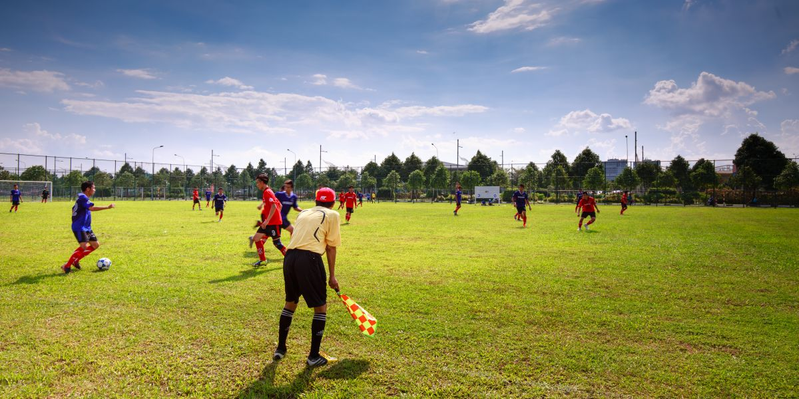

28JUNPresencial
Peneira Nacional Sub-13
Pré-seleção por vídeo · 312 inscritos · encerra em 6 dias
Ver e inscrever-seSeletivas online e presenciais, abertas a todo o Brasil. Ache a sua e inscreva-se — é grátis, de onde você vier.

Presencial · pré-seleção por vídeo · 312 inscritos · aberta a atletas de todo o Brasil.
Ver e inscrever-se →Pré-seleção por vídeo · 312 inscritos · encerra em 6 dias
Ver e inscrever-seRecife/PE · 148 inscritos · encerra em 13 dias
Ver detalhesOnline (vídeo) · 89 inscritos · encerra em 27 dias
Ver detalhesPorto Alegre/RS · 64 inscritos · encerra em 34 dias
Ver detalhesOnline (vídeo) · 51 inscritos · encerra em 41 dias
Ver detalhesSalvador/BA · 73 inscritos · encerra em 48 dias
Ver detalhes